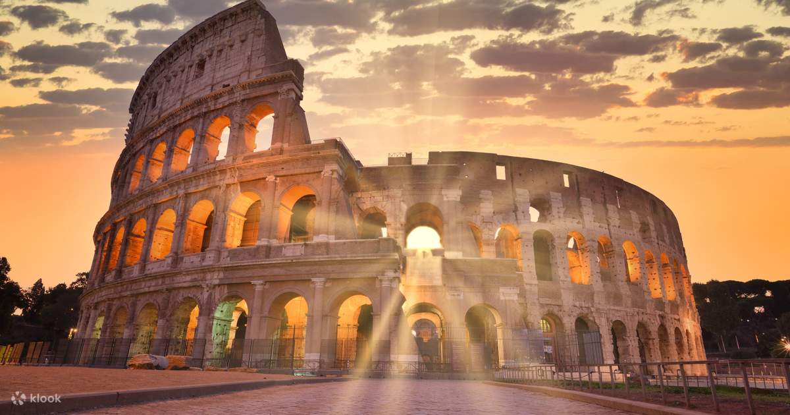

羅馬擁有超過2800年的歷史，從傳說中的羅慕路斯與雷穆斯於公元前753年建城開始，經歷了羅馬王政時代、羅馬共和國時期，最終成為龐大的羅馬帝國中心。
羅馬帝國在公元1-2世紀達到鼎盛，疆域橫跨歐洲、亞洲和非洲，地中海成為其內海。這一時期留下了許多宏偉建築，如羅馬競技場、萬神殿和古羅馬廣場。
公元4世紀，君士坦丁大帝將基督教定為國教，並遷都君士坦丁堡。西羅馬帝國於476年滅亡後，羅馬成為天主教教廷所在地，在中世紀和文藝復興時期繼續發揮重要作用。
1870年，羅馬成為統一後的義大利首都。今天的羅馬是歐洲最受歡迎的旅遊目的地之一，擁有無與倫比的歷史遺產和文化景觀。
